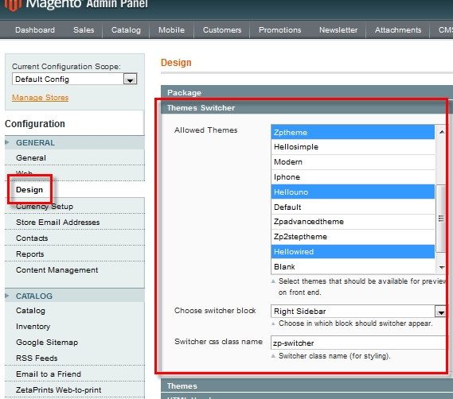

<?xml version="1.0" encoding="UTF-8"?><rss version="2.0"
	xmlns:content="http://purl.org/rss/1.0/modules/content/"
	xmlns:wfw="http://wellformedweb.org/CommentAPI/"
	xmlns:dc="http://purl.org/dc/elements/1.1/"
	xmlns:atom="http://www.w3.org/2005/Atom"
	xmlns:sy="http://purl.org/rss/1.0/modules/syndication/"
	xmlns:slash="http://purl.org/rss/1.0/modules/slash/"
	>

<channel>
	<title>Themes &#8211; Magento web-to-print &amp; dynamic imaging</title>
	<atom:link href="http://www.zetaprints.com/magentohelp/tag/themes/feed/" rel="self" type="application/rss+xml" />
	<link>http://www.zetaprints.com/magentohelp</link>
	<description>Just another WordPress site</description>
	<lastBuildDate>Fri, 07 Jun 2013 06:55:21 +0000</lastBuildDate>
	<language>en-US</language>
	<sy:updatePeriod>hourly</sy:updatePeriod>
	<sy:updateFrequency>1</sy:updateFrequency>
	<generator>https://wordpress.org/?v=4.4.1</generator>
	<item>
		<title>Theme switcher extension</title>
		<link>http://www.zetaprints.com/magentohelp/theme-switcher-extension/</link>
		<pubDate>Tue, 10 May 2011 12:20:03 +0000</pubDate>
		<dc:creator><![CDATA[atanas]]></dc:creator>
				<category><![CDATA[Web-to-print themes]]></category>
		<category><![CDATA[Preview]]></category>
		<category><![CDATA[Skins]]></category>
		<category><![CDATA[Themes]]></category>

		<guid isPermaLink="false">http://www.zetaprints.com/magentohelp/?p=12769</guid>
		<description><![CDATA[This extension is no longer supported. A fun feature for your web-to-print store to let customers choose from a variety of front-end themes. Our free Theme switcher extension for Magento adds a feature to the front-end of your web-to-print store enabling users to switch between different themes. This could prove quite useful if you like [&#8230;]]]></description>
				<content:encoded><![CDATA[<h4><span style="color: #ff0000;">This extension is no longer supported.</span></h4>
<p>A fun feature for your web-to-print store to let customers choose from a variety of front-end themes.<span id="more-12769"></span></p>
<div style="display: table;">
<p></p>
<div style="position: relative; top: 15px; display: inline;">
<p>Our free <a title="Theme switcher extension for Magento" href="https://www.magentocommerce.com/magento-connect/ZetaPrints/extension/6454/zetaprints_theme" target="_self">Theme switcher</a> extension for Magento adds a feature to the front-end of your web-to-print store enabling users to switch between different themes.</p>
<p>This could prove quite useful if you like your customers to be able to choose their favorite look of your web-to-print shop themselves.</p>
</div>
</div>
<h2>Theme switcher installation</h2>
<p>Installation process is identical to all other extension installations.</p>
<p></p>
<p>Open Magento Connect Manager (<em>System/Configuration/Magento Connect Manager</em>), paste the <a title="Theme switcher extension for Magento" href="https://www.magentocommerce.com/magento-connect/ZetaPrints/extension/6454/zetaprints_theme" target="_self">extension key</a> and hit <strong>Install</strong>.</p>
<h2>Configuration</h2>
<p>The theme selection block becomes visible on the front end only after configuration. Navigate to <em>System &gt; Configuration &gt; Design &gt; Themes Switcher</em> and highlight the themes you want to appear in the switcher list.</p>
<p></p>
<p><strong>Note.</strong> Hold <em>Ctrl</em> to select multiple themes.</p>
<p>The default theme switcher position is top of the right side bar but this location can be changed through the <strong>Choose switcher block</strong> drop-down menu.</p>
<p>If you want to apply special custom styling, use the default <strong>zp-switcher</strong> CSS class or assign a special class name using <strong>Switcher css class name</strong> field.</p>
<p>Selecting a theme for the switcher will enable it for all design options (<em>locale, layout, templates, skin</em>) but will not change whatever is set as default <a title="Magento custom theme integration" href="../../../custom-theme-integration/" target="_self">theme</a>. This is useful when you want to use a default theme with some special features like <a title="Web-to-print and dynamic imaging" href="../../../../" target="_self">web-to-print or dynamic imaging</a>.</p>
<h2>Web-to-print compatibility</h2>
<p>The extension allows preview of any installed theme in any package, except CSS-only themes. It is fully compatible with our <a title="web-to-print and dynamic imaging" href="../../../magento-web-to-print-overview/">web-to-print extension</a>.</p>
<h2>Links</h2>
<ul>
<li><a title="Theme switcher in our web-to-print demo store" href="../../../../magento/" target="_self">Demo</a></li>
<li><a title="Theme switcher extension source code" href="http://code.google.com/p/magento-w2p/source/browse/#svn%2Fbranches%2FTheme_Switcher" target="_self">Source code</a></li>
<li><a title="Theme switcher extension issue list" href="http://code.google.com/p/magento-w2p/issues/list" target="_self">Issues</a></li>
</ul>
]]></content:encoded>
			</item>
	</channel>
</rss>

<!-- Localized -->